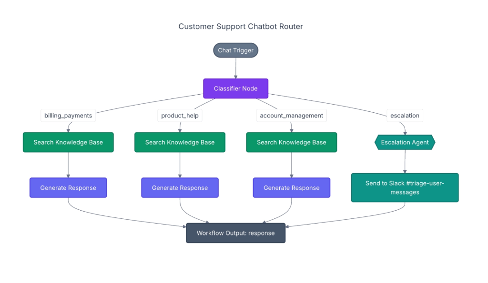
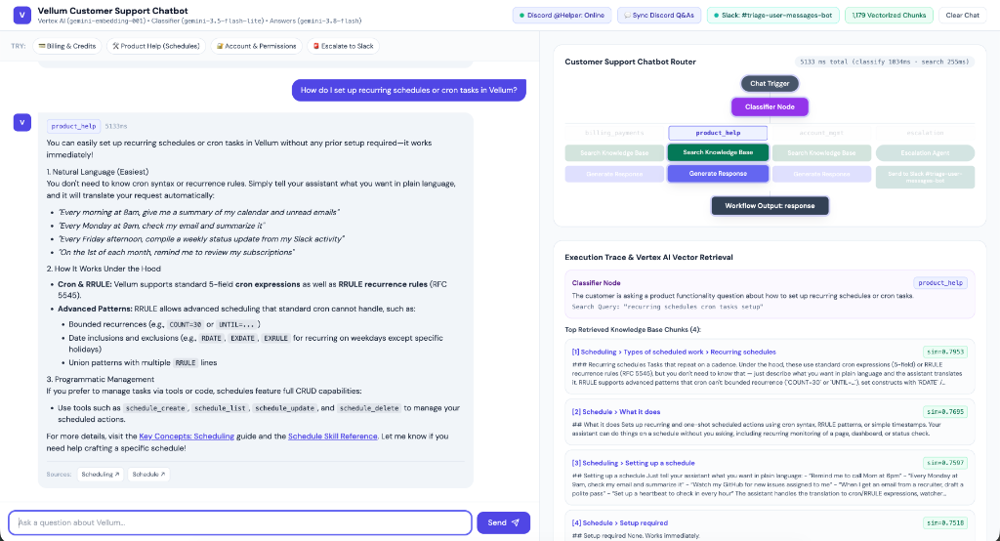
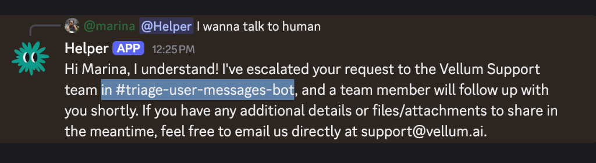

1. The Challenge
As Vellum's community grew, customer questions were coming in from two places at once: our web app and our 16-channel Discord community.
We noticed two major bottlenecks:
- Repeated Questions: Around 80% of questions were already answered either in the official Vellum Docs (
vellum.ai/docs) or buried inside older Discord threads (in#users-helping-users,#bugs, and#feedback). Yet our team still had to look them up and reply manually. - Slow Triage for Real Issues: When a user actually needed a human, such as for a production issue or a billing problem, their message sat in the same queue as routine "How do prepaid credits work?" or "How do I pair a second device?" questions.
Our goal was simple: give customers accurate answers in under 3 seconds on both the web and right inside Discord, while immediately routing human-needed issues to our team in Slack.
2. The Architecture: A 4-Way Support Router
Instead of building a single generic chatbot, we designed a Customer Support Chatbot Router that classifies every incoming message first and sends it down the right path:

-
Classifier Node (
gemini-3.5-flash-lite): Reads the user's message and picks one of four routes:billing_payments: Pricing, prepaid credits, invoices, and Agentic Payments.product_help: Setup, skills, memory, schedules, channels, and self-hosting.account_management: Permissions, privacy, OAuth connections, and device pairing.escalation: Frustrated users, bug/outage reports, or anyone asking to talk to a human.
- Knowledge Base Search (for the first 3 routes): Searches our vectorized knowledge base with a boost toward the matched category so billing questions prioritize billing docs and product questions prioritize product guides.
- Generate Response (
gemini-3.8-flash): Writes a clear, helpful answer with direct links to the documentation sources. - Escalation Agent → Slack: When a message hits the
escalationbranch, the bot reassures the customer that the team is on it, and simultaneously posts a structured triage card in our internal Slack triage channel with a severity tag (LOWtoURGENT), a summary, and a recommended next step.
3. Building the Knowledge Base (Docs + Discord)
A RAG chatbot is only as good as the knowledge it searches. We combined two sources into a single 1,179-chunk vector database powered by Google Cloud Vertex AI (gemini-embedding-001):
-
Scraping Official Documentation:
- We pulled all 93 pages from
vellum.ai/docs/llms.txtin clean Markdown format. - Rather than cutting text at arbitrary word counts (which breaks code blocks and instructions in half), we split pages cleanly by their section headings (
#,##,###) and tagged each section by category (billing_payments,product_help,account_management), creating 899 doc chunks.
- We pulled all 93 pages from
-
Turning Messy Discord Threads into Clean Q&As:
- Real user troubleshooting happens in Discord, but raw chat logs are full of "hey", "any update?", and back-and-forth debugging.
- We scraped threads from forum channels (
#bugs,#feature-request) and reply chains from text channels (#users-helping-users,#feedback). - Before adding them to the vector database, we passed each thread through
gemini-3.5-flash-lite, which filtered out small talk and rewrote the useful threads into 280 clean Question & Answer cards.
-
Keeping It Fresh with a Daily Cron Job:
- We set up a daily 9:00 AM automation (
Daily Discord Vector DB Sync) that checks Discord for new or updated threads, vectorizes only what changed, and reloads the chatbot automatically.
- We set up a daily 9:00 AM automation (
4. How We Saved 80%+ on Response Time
When we first tested the chatbot, responses took 14 to 18 seconds, and even typing "hey" took over 4 seconds. From a Solutions Architect standpoint, we made four targeted changes that brought response time down to ~2.5 seconds:
| Bottleneck | What We Changed | Time Saved |
|---|---|---|
Simple greetings ("hey", "thanks") ran the full AI pipeline |
Added an instant greeting filter before calling any LLM | 4.2s → 0.001s |
| Step-by-step waiting (Classify first, then embed the search query) | Ran the Classifier and Vector Embedding at the exact same time in parallel | ~0.5s saved per message |
| Heavy "thinking" overhead on simple RAG lookups | Used fast gemini-3.5-flash-lite for routing and turned off extra reasoning delay on gemini-3.8-flash since the exact doc chunks are already in the prompt |
~10s saved per message |
| Slow external database network calls | Loaded the normalized 3.2 MB vector index directly into memory |
Search runs in < 1 millisecond |
5. The Demo Chatbot & Live Monitoring Console
To make it easy for our team to test the router and see what happens under the hood, we built an interactive Demo & Monitoring Console:

- Left Pane (Customer Chat): Lets you test real customer questions or click one-tap example prompts for Billing, Product Help, Account Management, and Slack Escalation.
-
Right Pane (Live Router Monitor & Retrieval Inspector):
- Visual Flowchart: Lights up each node of the router diagram in real time as a message moves from
Chat Trigger→Classifier Node→ the chosen branch →Workflow Output. - Latency Breakdown: Shows the exact millisecond timing for classification, vector search, and answer generation on every message.
- Retrieved Sources Inspector: Shows the exact 4 documentation or Discord Q&A chunks that the vector search pulled, along with their similarity match score (
sim=0.7953) and links to the source. - Live Connection Controls: Displays live status badges in the top bar for Slack, Discord (
@Helper: Online), and the 1,179 Vectorized Chunks, with one-click modals to sync Discord or fire a test alert to Slack.
- Visual Flowchart: Lights up each node of the router diagram in real time as a message moves from
6. Meeting Users Where They Are: The @Helper Discord Bot
Finally, we connected the exact same router directly to our Discord server as the @Helper bot:

- Tag
@HelperAnywhere: When a user tags@Helperin a Discord channel or thread, the bot reads the last 6 messages in that conversation for context, searches all 1,179 docs + Discord Q&A chunks, and replies right in the thread with source links. - Seamless Human Handoff: If a user in Discord tags
@Helperasking to talk to a human (or reports a critical issue),@Helperreplies politely in Discord without exposing internal Slack channel names, while posting the triage alert + a direct link to that Discord message into our Slack triage channel.